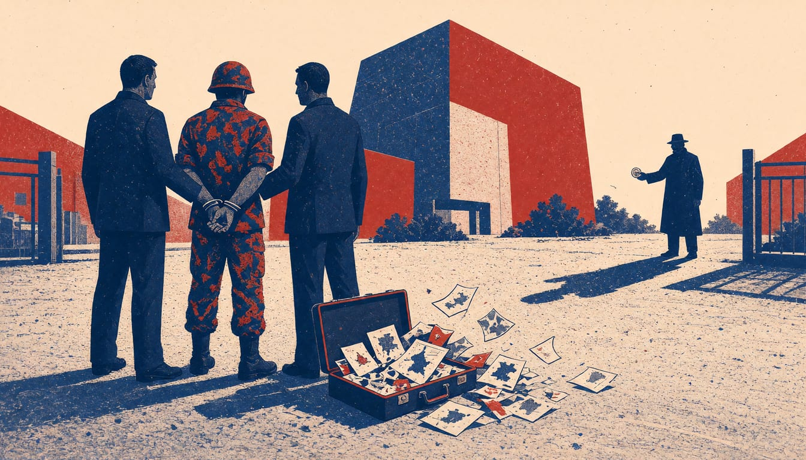

British police arrest serving US soldier on suspicion of spying for Russia
The 41-year-old was held under the National Security Act near Nato's Allied Rapid Reaction Corps headquarters in Gloucestershire, and faces possible charges from both Britain and the US Army.

British police have arrested a serving US soldier on suspicion of spying for Russia. Counter Terrorism Policing, the Metropolitan Police unit in London that investigates terrorism, said the 41-year-old man was detained near Gloucester on 10 November under the National Security Act 2023. It said he was suspected of collecting secret information and working for a foreign intelligence service. Officers said the case, which concerns Russia, is not linked to any other ongoing Counter Terrorism Policing investigations.
The BBC understands the soldier was based at Imjin Barracks in Innsworth, Gloucestershire, the headquarters of Nato's Allied Rapid Reaction Corps. Kash Patel, the director of the FBI, said in a statement: "This important arrest involves allegations of espionage." Patel called the allegations "of the utmost concern to the United States and our allies."
Counter Terrorism Policing said it is running the investigation together with US authorities, the US military and the FBI. Officers are searching two locations in Gloucestershire as part of the inquiry. Police can hold the soldier without charge for up to 14 days. Vicki Evans, Deputy Assistant Commissioner at Counter Terrorism Policing London, called the arrest "significant", saying the allegations are serious and the investigation is very much ongoing.
Brig Gen Sean Stinchon, head of the US Army Counterintelligence Command, said the alleged conduct of a senior soldier entrusted with sensitive information was "a sobering reminder that insider threats are real and persistent". He encouraged anyone who has seen something suspicious to report it to their local counterintelligence office. According to a source familiar with the situation, the soldier faces charges from both British authorities and the US Army. Charges related to espionage in the American military courts can carry life imprisonment.
The soldier remains in custody at a London police station, and police have not released his name. British and US officials confirm he was entrusted with sensitive information as a member of the US Army. His name is expected in the coming days, once British authorities formally charge him.